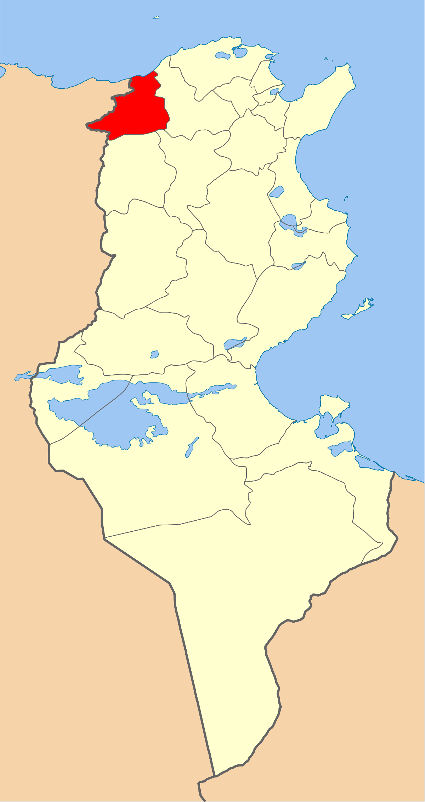
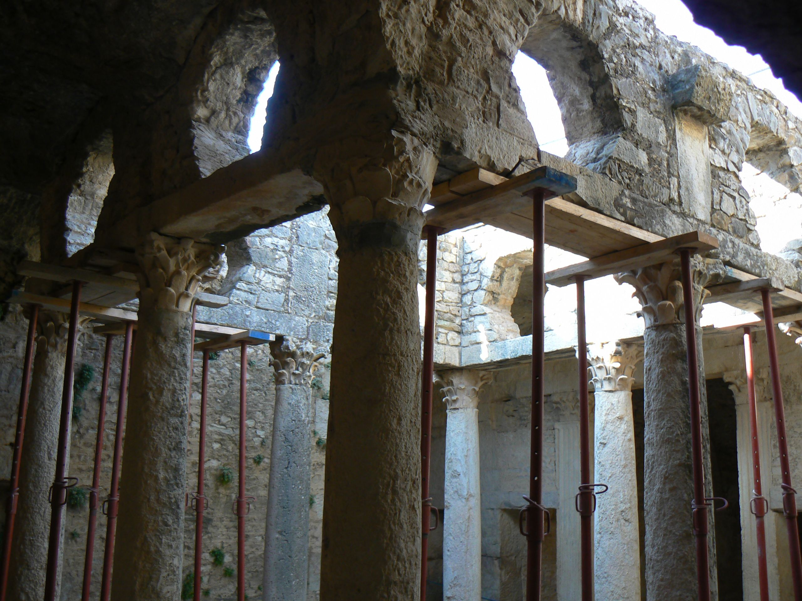
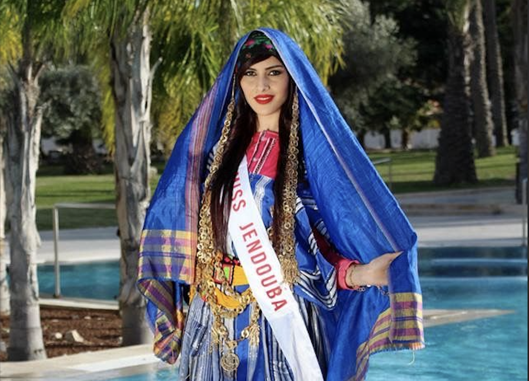
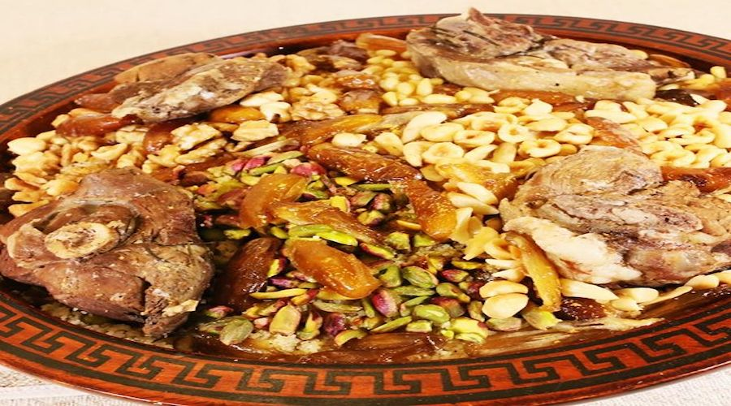
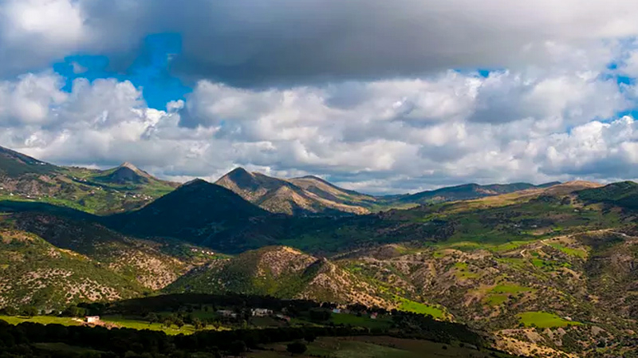
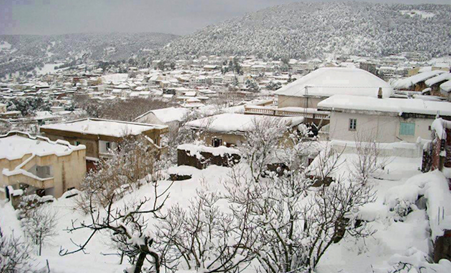

Jendouba
Jendouba, nommée Souk El Arba jusqu'au 30 avril 1964, est une ville du Nord-Ouest de la Tunisie située à 154 kilomètres de Tunis et à cinquante kilomètres de la frontière algéro-tunisienne. Elle se trouve dans la vallée de la Medjerda au centre d'une plaine fertile.
Le fort Genois
Bulla Regia
Foret Ain drahem
Jendouba Sports
Quelques chiffres
Superficie
3 102 km2
Nombre de maisons
92 000
Habitants
401 365
Localisation
Le gouvernorat de Jendouba se situe à l'extrémité nord-ouest de la Tunisie, à 150 kilomètres de la capitale. Il est limité par les gouvernorats du Kef et de Siliana au sud, le gouvernorat de Béja à l'est, 135 kilomètres de frontière avec l'Algérie (wilaya d'El Tarf) à l'ouest et la mer Méditerranée au nord, avec un littoral long de 25 kilomètres.

Histoire
Héritière et prolongement de l'antique cité de Bulla Regia, le noyau de la ville moderne de Jendouba commence à prendre naissance autour de la gare, ouverte peu avant l'instauration du protectorat français le 1er septembre 1879. Devenue municipalité le 25 septembre 1887, la ville se développe, dans un premier temps, du côté nord de la ligne de chemin de fer puis s'étend peu à peu vers le sud. Son nom originel de Souk El Arba, soit « marché du mercredi », est lié directement au jour du marché hebdomadaire qui se tenait chaque mercredi.

Culture

hover me
hover me
hover me
hover me